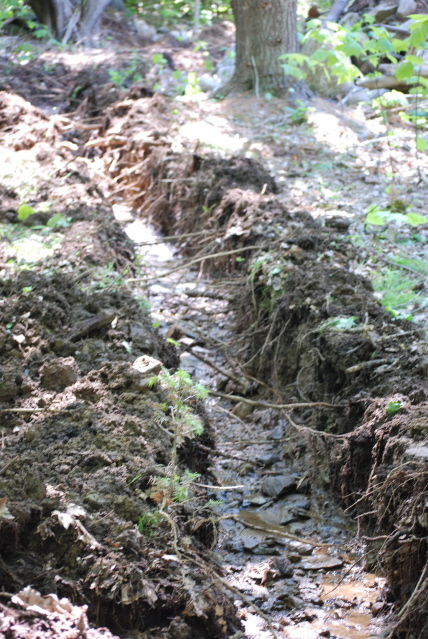

Thursday, February the 28th, 2013
back to: title, date or indexes
Important Hooting Yard postages are unlikely to appear over the following week while I become a temporary member of the international jet-set. During this period, the best thing you lot can do by way of coping is to sprawl in a ditch and sob your little hearts out. To assist you in this endeavour, here is a snap of the sort of ditch in which you ought to sprawl.
